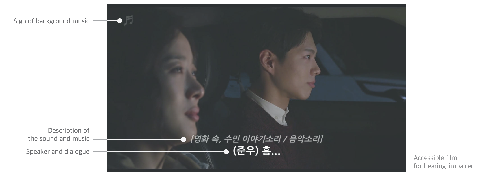
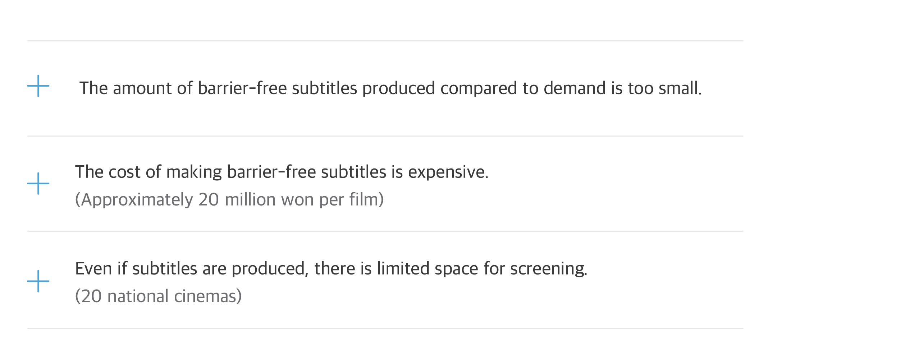
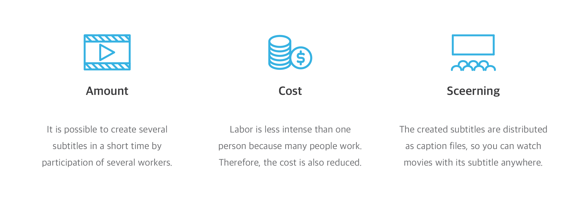
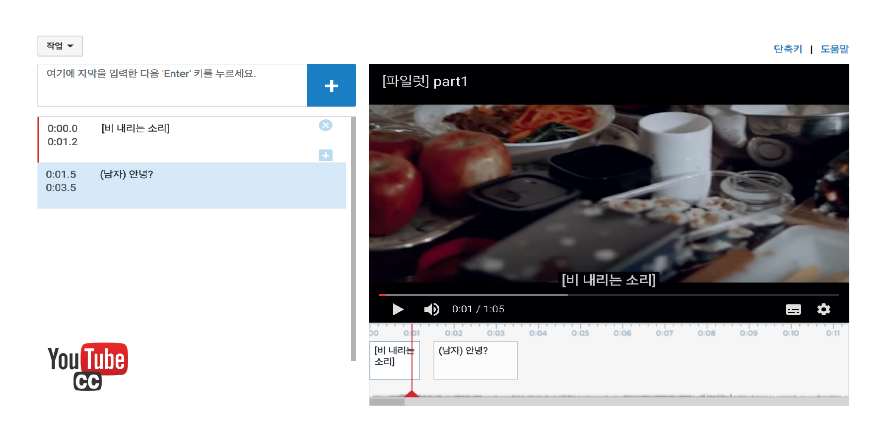

Background
The project started with a question "How do hearing-impaired watch movies?". People with hearing impairments are watching movies through 'Barrier-free subtitles' which are special subtitles with commentary on the screen. Unlike ordinary subtitles which simply contain dialogues, barrier-free subtitles for hearing-impaired provide dialogues and its speaker, description of background music and sound information.

In Korea, however, the debate about barrier-free movie started from the demonstration of audiovisual impaired people at the 2010 Daejong Awards. Support for this issue is expanding, but there is still a shortage of special subtitles in short films.
Key Problems

Through various surveys, we were able to derive three key problems. Firstly, the amount of barrier-free subtitles produced compared to demand is too small. Every year, movies are pouring out, but the movies that hearing-impaired can watch are very limited. As a result, the cultural life of them were also limited.
Secondly, the production cost of barrier-free subtitles is also a big problem. Creating a barrier-free subtitle is a very time-consuming task, so the cost is also expensive. According to the article, it is approximately 20 million won per film. This expensive cost is another problem of barrier-free subtitle production.
Lastly, even if subtitles are produced, there is limited space for screening. Barrier-free movies can be watched through application to a movie theater once a month. In addition, theaters are very limited to 20 in the country. This screening space problem lowers the cultural accessibility of the hearing-impaired.
How about?
How about a 'crowdsourcing platform' for generating barrier-free subtitles?The problem identified through the key problems were the amount of barrier-free subtitles, production cost and screening space. Crowdsourcing is a form in which many people carry out burdenless tasks. By using this, a large number of subtitles can be produced by the several workers and the labor intensity of the individual is lowered, so that the cost is also reduced. In addition, space problems can be solved by distributing created subtitles. Because of this advantage, we tried to solve the problem with crowdsourcing.

Pilot Study
